図解：明治時代の美術
明治美術の成立
- 1868〜
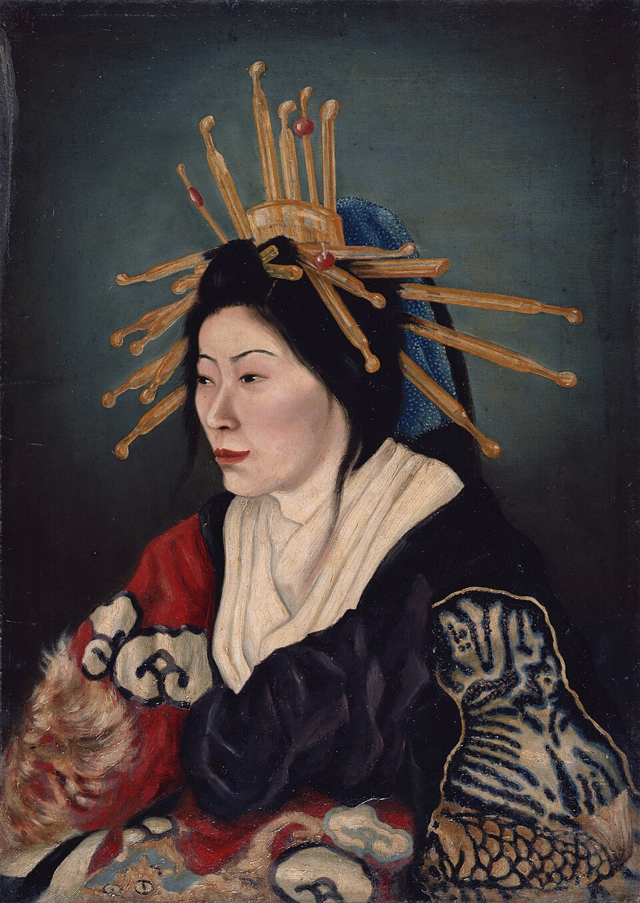
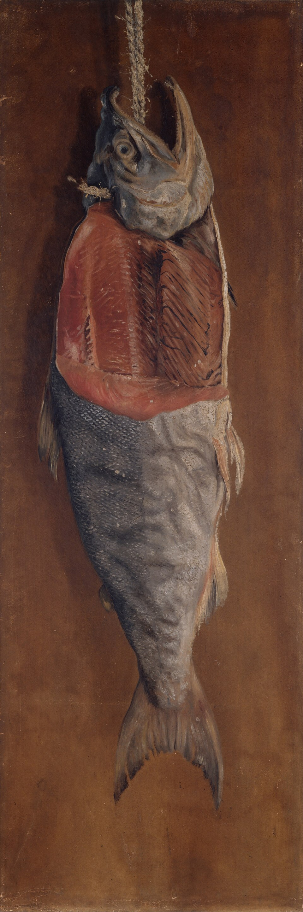
高橋由一の油絵ワーグマンに油絵を学ぶ
画塾天絵楼で普及に努める - 1876
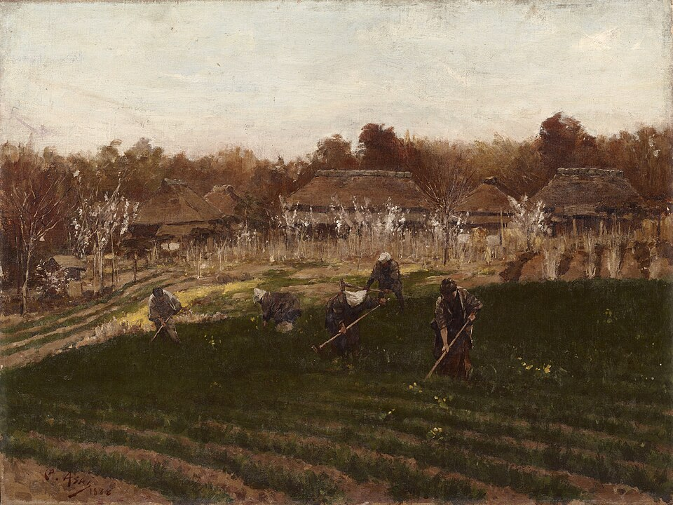
工部美術学校フォンタネージらを招く
浅井忠らが西洋画を学ぶ - 1882頃〜
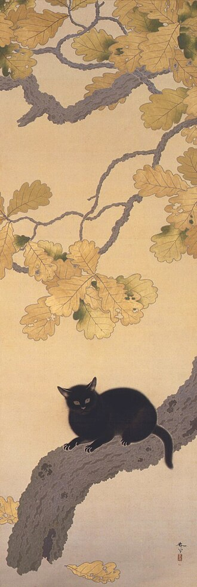
日本画の革新フェノロサが日本画を評価
天心が東京美術学校へ - 明治後期
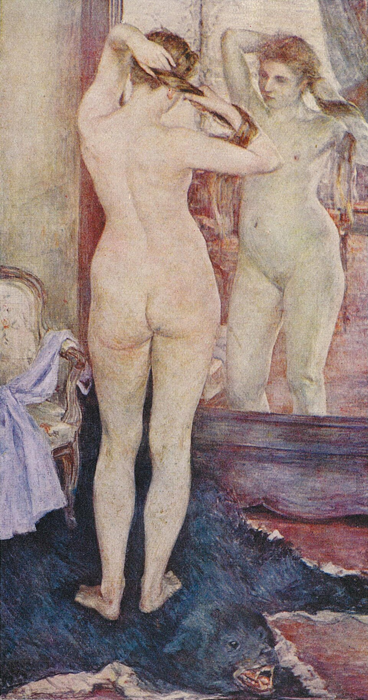
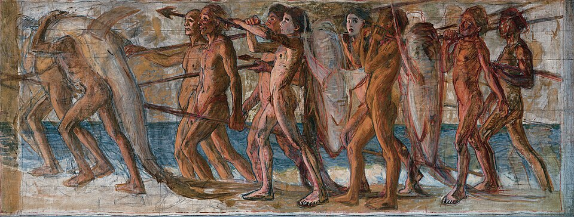
黒田清輝と白馬会パリから外光派をもたらす
青木繁らが育つ
旧派と新派の違い
重要人物
洋画の先駆け
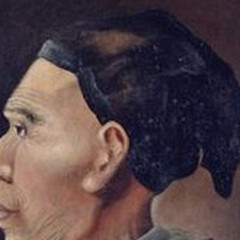
司馬江漢画家オランダ語を学び、銅版画や油絵を描き始める- チャールズ・ワーグマン報道画家1861年来日。横浜で由一らに油絵を教える
- 高橋由一洋画家天絵楼を開く。《鮭》は近代油絵の名作
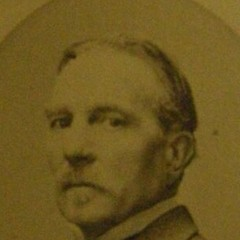
フォンタネージお雇い画家工部美術学校で浅井忠らに西洋画を教える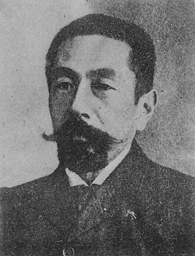
浅井忠洋画家フォンタネージに学ぶ。明治美術会の画家
日本画の革新
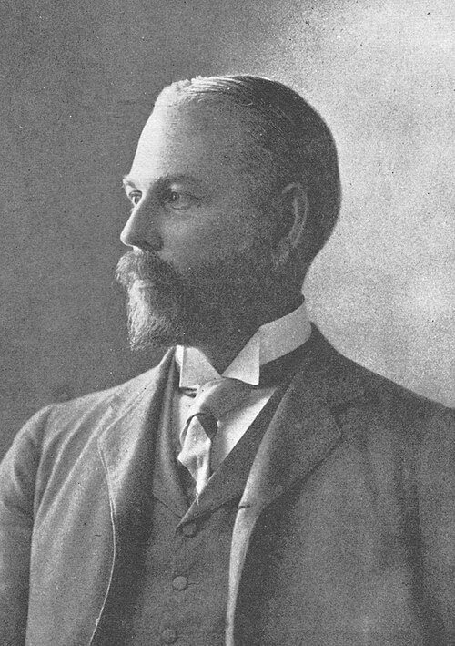
フェノロサ日本画の擁護者油絵より日本画が優れると考え、革新を主張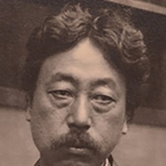
岡倉天心指導者東京美術学校の設立に尽力。日本美術院を結成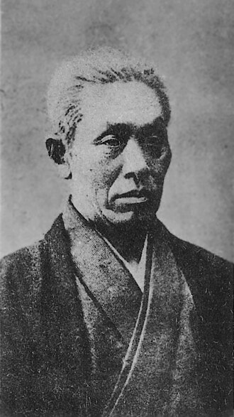
狩野芳崖日本画家橋本雅邦と日本画に新しい命を与えようとする- 横山大観日本画家日本美術院で朦朧体を試み、文展に新風
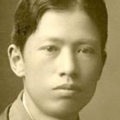
菱田春草日本画家大観とぼかしを研究。《黒き猫》を描く
新しい洋画
建築・彫刻
- コンドルお雇い建築家鹿鳴館を建て、日本人の建築家を育てる
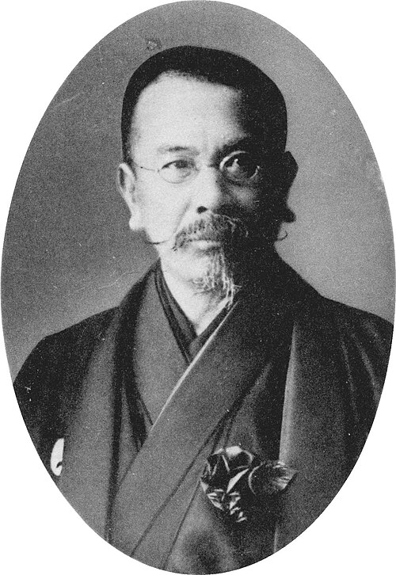
辰野金吾建築家コンドルらの教え子。東京駅を設計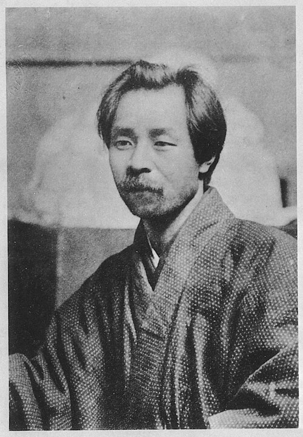
荻原守衛彫刻家ロダンに触れ、ブロンズで人間の内面を表す
肖像・図版の出典
- 《司馬江漢像》高橋由一、1875〜76年、東京藝術大学：出典（Public domain）
- アントニオ・フォンタネージの肖像写真（撮影者不詳、1900〜03年の複製）：出典（Public domain）
- 浅井忠の肖像写真（撮影者不詳、1907年以前、国立国会図書館）：出典（Public domain）
- アーネスト・フェノロサの肖像写真（撮影者不詳、1890年頃）：出典（Public domain）
- 岡倉天心の肖像写真（撮影者不詳、1905年頃）：出典（Public domain）
- 狩野芳崖の肖像写真（撮影者不詳、1888年以前、国立国会図書館）：出典（Public domain）
- 菱田春草の肖像写真（撮影者不詳、1900年頃）：出典（Public domain）
- 《自画像》黒田清輝、1915年、黒田記念館：出典（Public domain）
- 辰野金吾の肖像写真（撮影者不詳、東京帝国大学工科大学長の頃）：出典（Public domain）
- 荻原守衛の肖像写真（撮影者不詳、1910年以前、国立国会図書館）：出典（Public domain）
洋画の前史と明治の教育
解剖図と洋風画が開いた前史
書籍 p.212小塚原の刑場で死刑囚の腑分け、すなわち解剖を見た杉田玄白は、体内が西洋の解剖図のとおりであることに驚いた。これを機にオランダ語を学び、3年をかけて1774年に『解体新書』を翻訳した。日本の近代の始まりを告げる出来事であった。
江戸時代には鎖国の下で自国の文化・産業の内へ向かっていたが、やがて玄白のように外国の知識へ目を向け、物事の仕組みを見ようとする人が現れた。エレキテル、摩擦起電機を完成させた平賀源内もその一人で、植物学者・鉱物学者・小説家・画家を兼ねるような人であった。
源内の弟子・小田野直武は『解体新書』の解剖図を描いた。もう一人の弟子・司馬江漢も多才で、オランダ語を学びながら西洋画を研究し、銅版画や油絵を描き始めた。神戸市立博物館の《異国風景人物図・岬頭紅毛男図》（1789〜1801年頃）はその作例である。同時期、亜欧堂田善も自らの工夫で銅版画を作った。

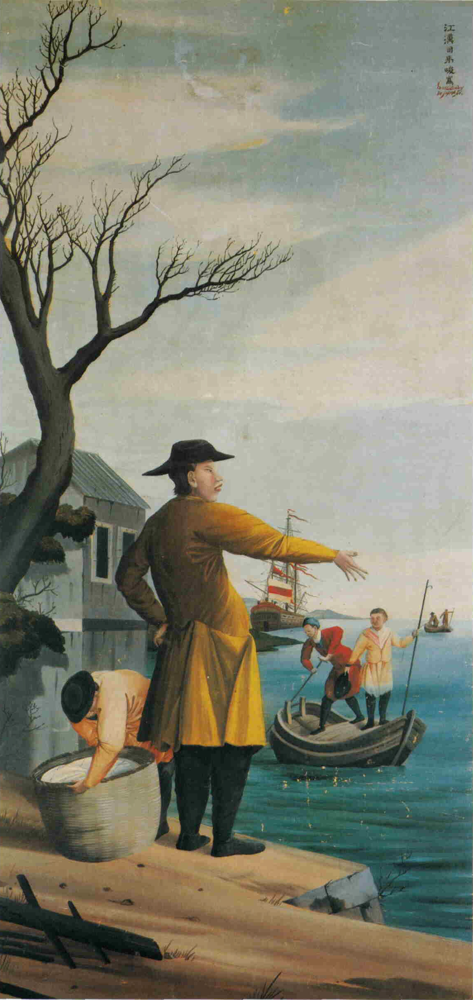
画像を拡大 ＋《異国風景人物図（男性図）》
- 作者
- 司馬江漢
- 制作時期
- 18世紀末期〜19世紀初期
- 所在地・所蔵
- 神戸市立博物館
- 素材・形式
- 絹本油彩
- 別名
- 岬頭紅毛男図
- 書籍の年代
- 1789〜1801年頃
出典・画像について
画像出典：司馬江漢 / Wikimedia Commons
Public domain
作品情報：画像出典・利用条件 · 作品照合資料 · 所蔵館の作品ページ
制作メモ
神戸市立博物館所蔵の司馬江漢筆《異国風景人物図》（双幅）のうち男性図。
原資料の図2-106と同じ図様。
Commonsの画像は図録から取られたもの。
江戸の民衆は実験家の創意工夫を楽しんだ。見せ物小屋ののぞきからくりでは、レンズの奥の絵が遠近感・立体感を伴い、本物のように見えることが評判となった。大名や富裕層も画家に珍しい動植物をありのままに描かせ、図鑑の出来を誇り合った。西洋画の遠近法や明暗法は、こうして少しずつ町へ入り込んでいた。
出島の学習と幕府の洋学研究
書籍 p.213西洋画を本格的に学ぶ手早く確実な方法は、オランダに向けて開かれたただ一つの港である長崎の出島へ行くことであった。日本の自然と生活に関心を持つシーボルトは、川原慶賀を助手として、自然や生活を見たまま忠実に描かせた。《瀉血手術図》（1820年代末、長崎歴史文化博物館）も慶賀の作例である。
Commonsで該当画像を確認できず公式収蔵DBへ追加調査。原品と作者・所蔵は確認できるが、公開画像の再利用許諾が確認できないため保留。
《瀉血手術図》
- 作者
- 川原慶賀
- 制作時期
- 江戸時代後期
- 所在地・所蔵
- 長崎歴史文化博物館
- 素材・形式
- 紙本着色
- 別名
- A Scene of Phlebotomy／Scene of Phlebotomy
- 書籍の年代
- 1820年代末
出典・画像について
1820年代には近海に外国船が現れ、幕府は異国船打払令で接近を警戒した。幕府は日本人が外国に学ぶことも、外国人へ日本を教えることも一層厳しく禁じた。その日本の状況を嘆いた渡辺崋山は処罰を受けた。崋山も新しい絵を目指した画家であった。
幕府は外国との交流を禁じる一方、蕃書和解御用掛を設け、必要最小限の西洋事情を入手した。この洋学研究所は後に蕃書調所となり、1862年には洋書調所と改称された。川上冬崖や高橋由一が絵を学ぶために入ってきた。
開国とワーグマンの指導
書籍 p.2131853年、ペリーは4隻の軍艦とともに浦賀へ来航し、日本に開国を迫った。幕府だけでなく社会全体が動揺し、鎖国か開国か、天皇中心か幕府中心かという国の将来をめぐり、流血を伴う争いが起こった。
チャールズ・ワーグマンは1861年にイギリスの新聞の報道画家として来日した。江戸の東禅寺に置かれたイギリス公使館に泊まった夜、水戸の浪士による襲撃に遭い、目撃した戦闘を描くことになった。その後、横浜の居留地に住み、五姓田義松や高橋由一に油絵を教えた。《縫う》（1877年、東京国立博物館）もワーグマンの作例である。
Commons初回・絞込、東京国立博物館等の追加検索でも、原PDFの室内で縫い物する婦人図を同定できず保留。別作品では代用しない。
《縫う（原資料表記、個体未確定）》
- 作者
- チャールズ・ワーグマン（原資料記載）
- 制作時期
- 不明
- 所在地・所蔵
- 東京国立博物館（原資料記載、未確認）
- 素材・形式
- 書籍の年代
- 1877年
出典・画像について
画像の掲載は確認待ち
制作メモ
Commons初回・絞込、東京国立博物館等の追加検索でも、原PDFの室内で縫い物する婦人図を同定できず保留。
別作品では代用しない。
画塾と高橋由一の油絵
書籍 p.2141868年に幕府が倒れ、明治の文明開化へ移ると、西洋の文物を積極的に学ぶ時代となった。油絵を学んできた由一や冬崖は、画塾を開いて普及に努めた。由一の天絵楼では、本人が技を磨き、後輩を教え、月1回の展覧会も開いた。
由一の《花魁》（1872年、東京藝術大学）や《鮭》（1877年頃、東京藝術大学大学美術館）は、近代油絵の出発を告げる名作とされている。

《美人（花魁）》
- 作者
- 高橋由一
- 制作時期
- 1872年
- 所在地・所蔵
- 東京藝術大学大学美術館
- 素材・形式
- 油彩・キャンバス
- 別名
- 花魁／Beauty(Courtesan)
出典・画像について
画像出典：Takahashi Yuichi
Public domain
作品情報：画像出典・作品情報（Commons）
制作メモ
指定された藝大所蔵の1872年作と作者・題名が一致。
Commonsが原作品と忠実な二次元複製画像のパブリックドメインを明示している。

《鮭》
- 作者
- 高橋由一
- 制作時期
- 1877年頃
- 所在地・所蔵
- 東京藝術大学大学美術館
- 素材・形式
- 紙・油彩
- 別名
- Salmon
出典・画像について
画像出典：Takahashi Yuichi
Public domain
作品情報：画像出典・作品情報（Commons） · 所蔵館の作品ページ
制作メモ
同作者の複数作を区別するため公式資料を追加確認。
藝大所蔵の重文、紙油彩140×46.5cmの個体が一致し、CommonsのPD画像を採用できる。
技術者育成を担った工部美術学校
書籍 p.214明治政府は富強な国を目指し、専門学校を設けて技術者を育てた。1876年（明治9）に工部美術学校を開き、イタリアから画家フォンタネージ、彫刻家ラグーザ、建築家カペレッティを招いた。フォンタネージの下には浅井忠、小山正太郎、松岡寿、山本芳翠が集まり、本格的に西洋画を学んだ。浅井の《春畝》（1888年、東京国立博物館）はその後の作例である。

《春畝》
- 作者
- 浅井忠
- 制作時期
- 1888年
- 所在地・所蔵
- 東京国立博物館
- 素材・形式
- 油彩・キャンバス
- 別名
- Spring Ridge
出典・画像について
作品情報：画像出典・作品情報（Commons） · 所蔵館の作品ページ
制作メモ
作者・1888年・東京国立博物館の収蔵番号と図柄が一致。
Commonsはe国宝を画像出典とし、忠実な複製画像をPD-Artとして公開している。
工部美術学校は短期間で閉校した。政府の政策が一時的に変わり、西洋化一辺倒より日本の文物の独自の良さを広める方が国益になると判断したためである。西洋技術の学習はここで一度途絶えた。原資料の本文は「6年で閉校」、比較表は廃校年を1883年（明治16）と記す。
建築・日本画・洋画の近代化
建築家の招聘と日本人の育成
書籍 p.214幕末に外国人の来訪が増えると、彼らのための洋風建築も造られた。日本の優れた大工による和洋折衷のホテルや銀行が現れ、明治には政府が建築の急速な近代化を進めた。清水喜助の《第一国立銀行（旧三井組ハウス）》（1872年）がその作例である。

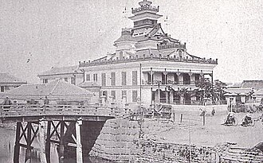
画像を拡大 ＋《第一国立銀行（旧三井組ハウス）》
- 作者
- 二代清水喜助
- 制作時期
- 1872年
- 所在地・所蔵
- 旧所在地：東京府兜町（現・東京都中央区日本橋兜町）
- 素材・形式
- 木造建築
- 別名
- 三井組ハウス
出典・画像について
画像出典：『昭和史 第1巻』（毎日新聞社） / Wikimedia Commons
Public domain
作品情報：画像出典・作品情報（Commons） · 所蔵館の作品ページ
制作メモ
現代建築・模型との混同を避けるため清水建設公式を追加確認。
指定された1872年の原建築の古写真で、Commonsが写真のPDを明示している。
原画像の配信制限または小さい元画像のため330px配信画像を使用。
海外から招かれたコンドルらは主要建築を設計・建築し、工部大学校などで日本人の近代建築家も育てた。《鹿鳴館》（1883年、1940年取り壊し）はその作例である。明治後期には教え子から、東京駅を設計した辰野金吾や赤坂離宮を設計した片山東熊が現れた。1890年代には先端技術の鉄筋コンクリートを取り入れる建物も造られ、日本の建築は次第にヨーロッパの水準へ近づいた。

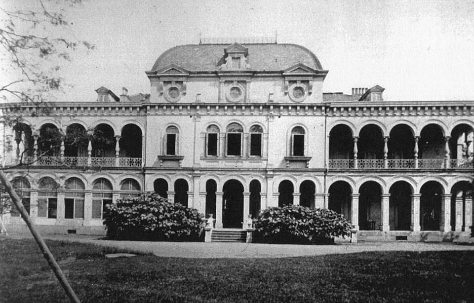
画像を拡大 ＋《鹿鳴館》
- 作者
- ジョサイア・コンドル
- 制作時期
- 1883年
- 所在地・所蔵
- 旧所在地：東京・内幸町（1940年取り壊し）
- 素材・形式
- 建築
- 別名
- Rokumeikan
出典・画像について
画像出典：Dallas Finn, Meiji Revisited / Wikimedia Commons
Public domain
作品情報：画像出典・作品情報（Commons）
制作メモ
明治期の原建築を撮影した古写真で模型ではない。
Commonsが設計者・建築年代・写真出典を記録し、写真のパブリックドメインを明示している。

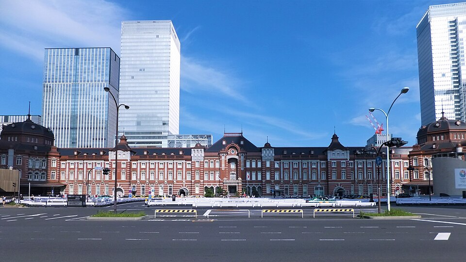
画像を拡大 ＋《東京駅丸の内駅舎（2012年復原後）》
- 作者
- 辰野金吾・葛西萬司
- 制作時期
- 1914年（2012年保存・復原）
- 所在地・所蔵
- 東京都千代田区丸の内、東京駅
- 素材・形式
- 煉瓦造建築
- 原題
- 東京駅丸の内駅舎
出典・画像について
画像出典：掬茶
CC BY-SA 3.0
作品情報：画像出典・作品情報（Commons） · 所蔵館の作品ページ
制作メモ
建築年代と撮影年代を区別するため公式資料を追加確認。
1914年原建築の保存・復原後を写す2013年写真。
三階・ドームは2012年復原であり創建当時の撮影ではない。
日本画の革新と東京美術学校
書籍 p.2151882年（明治15）頃、アメリカ人フェノロサは日本文化の優秀さを強調した。彼は油絵より日本画が優れていると考え、伝統を絶やさず新しくすることを主張した。明治に力を失っていた日本画家は希望を得て、橋本雅邦や狩野芳崖が日本画に新しい命を与えようとした。岡倉天心がその革新を引き継いだ。
天心が設立に尽力した東京美術学校は1889年（明治22）に開校した。当初の教室は日本画、木彫、漆、彫金に限られ、伝統芸術を育て直すことを目的とした。横山大観、菱田春草、下村観山が入学し、後に天心と日本美術院を作った。
同じ1889年、洋画家は明治美術会を結成した。日本画の下積みに置かれた時期を、協力して乗り越えた大きな油絵団体である。画塾やフォンタネージに学んだ人、川村清雄や原田直次郎のような留学経験者を含め、油絵で立とうとする人のほとんどが集まったといえるかもしれない。大観の《屈原》（1898年、広島・厳島神社）、春草の《黒き猫》（1910年、永青文庫、熊本県立美術館寄託）、原田の《騎龍観音》（1890年、護国寺、東京国立近代美術館寄託）は、それぞれの画家の作例である。

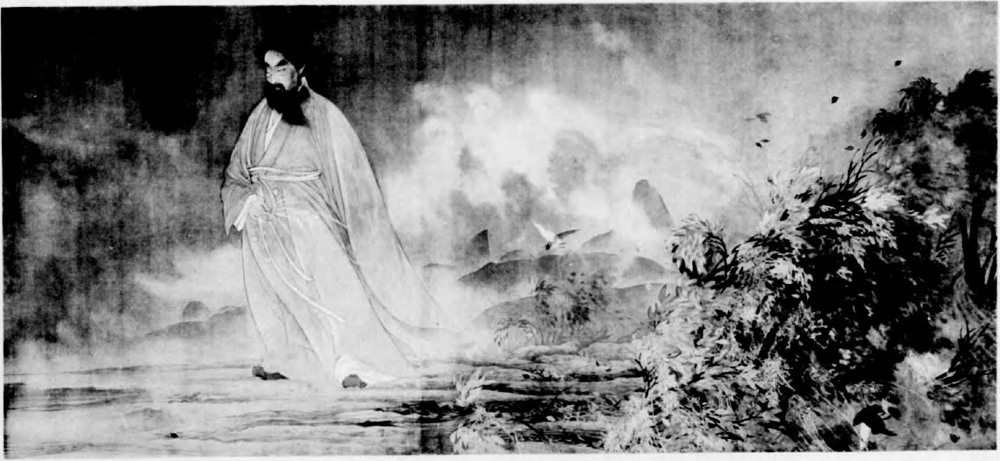
画像を拡大 ＋《屈原》
- 作者
- 横山大観
- 制作時期
- 1898年10月
- 所在地・所蔵
- 厳島神社、広島県廿日市市
- 素材・形式
- 絹本彩色
- 原題
- 屈原
- 別名
- 屈原図
出典・画像について
画像出典：横山大観・日本美術院『大観作品集』（1925年刊）、国立国会図書館 / Wikimedia Commons
Public domain (PD-scan / PD-Japan) · 回転・図版部分の切り出し
作品情報：画像出典・利用条件
制作メモ
1925年刊『大観作品集』のモノクロ図版。
左に立つ屈原、右手前の草木と背景の山の配置が原資料の図2-113に一致する。

《黒き猫》
- 作者
- 菱田春草
- 制作時期
- 1910年
- 所在地・所蔵
- 永青文庫（Commonsには熊本県立美術館寄託と記載）
- 素材・形式
- 原題
- 黒き猫
- 別名
- 黒き猫図／Black Cat
出典・画像について
画像出典：Hishida Shunsō
Public domain
作品情報：画像出典・作品情報（Commons） · 所蔵館の作品ページ
制作メモ
Commonsの所蔵表記を永青文庫公式で補足。
切手版ではなく原品全図の忠実な複写で、画像ページは作品と複写画像の双方をPDとして明示する。
原画像の配信制限または小さい元画像のため330px配信画像を使用。

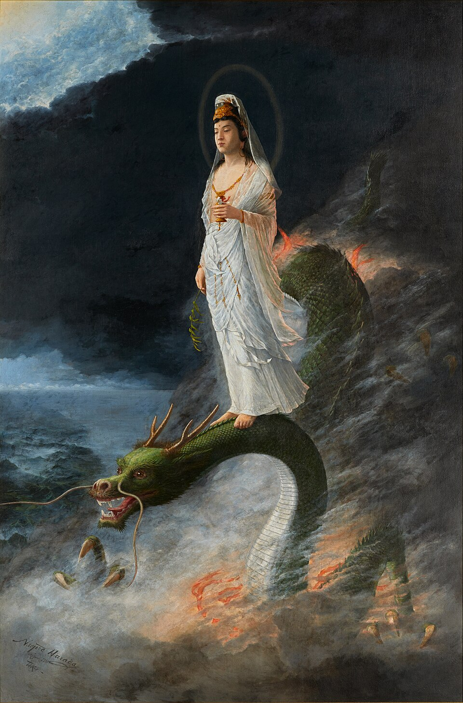
画像を拡大 ＋《騎龍観音》
- 作者
- 原田直次郎
- 制作時期
- 1890年
- 所在地・所蔵
- 護國寺蔵、東京国立近代美術館寄託
- 素材・形式
- 油彩・キャンバス
- 原題
- 騎龍観音
- 別名
- 騎竜観音／Kannon Bodhisattva Riding the Dragon
出典・画像について
画像出典：Harada Naojirō
Public domain
作品情報：画像出典・作品情報（Commons） · 所蔵館の作品ページ
制作メモ
所有者と寄託先を区別するため公式出品リストを追加確認。
龍上の白衣観音を描いた原品の全図であり、Commonsは忠実な二次元複写として画像もPDと明示する。
明治美術会と白馬会の対立
書籍 p.215パリで学んで帰国した黒田清輝は、自然光の下で人物も風景も明るく伸びやかに描く外光派の考えをもたらした。共感した久米桂一郎、和田英作、岡田三郎助、藤島武二らが集まり、白馬会が生まれた。黒田の《朝妝》（1893年）は現在焼失している。

《朝妝（焼失前の原品図版）》
- 作者
- 黒田清輝
- 制作時期
- 1893年
- 所在地・所蔵
- 焼失（現存せず）
- 素材・形式
- 原題
- 朝妝
- 別名
- Morning Toilette
出典・画像について
画像出典：Kuroda Seiki
Public domain
作品情報：画像出典・作品情報（Commons）
制作メモ
焼失前の原品を伝える1924年刊行図版で、後世の模写ではない。
2016年図録からの忠実なスキャンであることと、画像自体もPD-Artとして扱う根拠がCommonsに明記される。
写実を重んじ暗い色を下敷きとする明治美術会系は旧派の脂派、外光派の白馬会は新派の紫派と呼ばれ、対立が際立った。東京美術学校に油絵の教室が開かれると、黒田は教授としてフランスの美術学校の教育法を取り入れ、人材を育てた。
青木繁と明治浪漫主義
書籍 p.216青木繁は、東京美術学校で黒田清輝に学んだ生徒の一人である。ただし、やや反抗的で、教室外で好きな西洋美術や藤島武二から多くの影響を受けた。在学中の21歳で白馬会へ出品した絵が評判となり、その後《海の幸》（1904年）や《わだつみのいろこの宮》（1907年、原資料では福岡・石橋美術館）を描き、明治浪漫主義の立役者となった。

《海の幸》
- 作者
- 青木繁
- 制作時期
- 1904年
- 所在地・所蔵
- 石橋財団アーティゾン美術館、東京都中央区
- 素材・形式
- 油彩・カンヴァス
- 原題
- 海の幸
- 別名
- A Gift of the Sea
出典・画像について
画像出典：Shigeru Aoki
Public domain
作品情報：画像出典・作品情報（Commons） · 所蔵館の作品ページ
制作メモ
Commonsの旧所蔵表記を現所蔵館公式で更新確認。
別作品《海》《海景》とは区別した《海の幸》原品全図であり、Commonsは忠実な複写画像もPDと明示する。

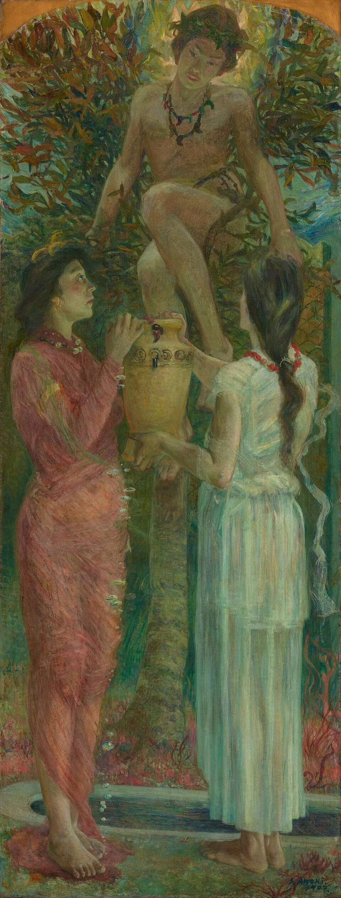
画像を拡大 ＋《わだつみいろこの宮》
- 作者
- 青木繁
- 制作時期
- 1907年
- 所在地・所蔵
- 石橋財団アーティゾン美術館、東京
- 素材・形式
- 油彩・カンヴァス
- 原題
- わだつみいろこの宮
- 別名
- Paradise Under the Sea／わだつみのいろこの宮
出典・画像について
画像出典：Shigeru Aoki
Public domain
作品情報：画像出典・作品情報（Commons）
制作メモ
完成作であり習作ではない。
現在の所蔵はアーティゾン美術館。
原書の石橋美術館表記と分離する。
Commons記載の公式作品URLは404。
青木は恋愛と放浪と貧窮の末、29歳で亡くなった。島崎藤村の詩集『若菜集』や雑誌『明星』が現れ、絵画も文学も青春の心の歌を精いっぱいに謳った時代を生きた画家である。
博覧会と国家・視覚技術
万博と内国勧業博覧会
書籍 p.216日本が初めて万国博覧会へ参加したのは1867年のパリ万博で、1873年のウィーン万博には日本政府として公式参加し、独自の文物と名産品を陳列した。万博は世界の優れた文明の産物を学んで取り入れ、日本の文物・芸術を海外へ紹介する場となった。
国内では万博に倣い1877年（明治10）から内国勧業博覧会を開いた。良いもの、新しいものを作り育て、国民の見る眼を養うことを目的とし、国を豊かにする催しとされた。絵画・彫刻も数多く陳列された。三代歌川広重の《内国勧業博覧会美術館之図》（1877年、神戸市立博物館）は当時の展覧会を伝える。

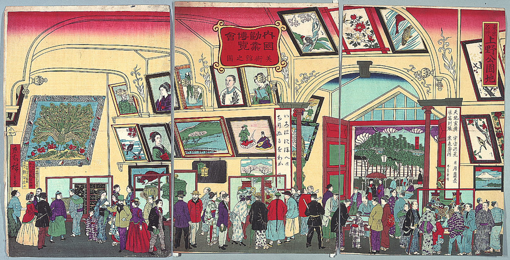
画像を拡大 ＋《東京名所上野公園地内国勧業博覧会美術館之図》
- 作者
- 歌川広重（三代）
- 制作時期
- 1877年
- 所在地・所蔵
- 神戸市立博物館
- 素材・形式
- 木版色摺
- 原題
- 東京名所上野公園地内国勧業博覧会美術館之図
- 別名
- 内国勧業博覧会美術館之図
出典・画像について
画像出典：Hiroshige III / Wikimedia Commons
Public domain
制作メモ
国文学研究資料館所蔵の摺り（三枚続）。
原資料が指定する神戸市立博物館の摺りとは別の摺り（同じ版）。
富国強兵と国家の美術
書籍 p.217青木の生きた明治浪漫主義の時代には、青春の心を謳う芸術が生まれた。
日本は1894年（明治27）に日清戦争、1904年（明治37）に日露戦争を戦った。富国強兵下の二つの勝利から、政府の目標であった先進国入りが実現したという意識が生まれた。豊かな国には文化も必要と考え、政府は1907年（明治40）に文部省美術展覧会、文展を開き、画家に権威と名誉を与えた。
時代の終わりに明治美術は国家の美術となった。それに対し、美術を自由な個人の仕事と考えて文展へ反発する画家も現れた。次の大正美術は、その個人の自覚から生まれる。
明治末までの写真の位置付け
書籍 p.229明治末までの写真は、対象を忠実に再現する視覚の技術として重宝された。
団体・学校・技法を整理する
美術団体と学校の対応を整理する
書籍 p.250明治美術は1868〜1912年を対象とする。文明開化の下で外国の文物を積極的に取り入れ、ヨーロッパで学んだ画家やお雇い外国人の指導により、西洋風の絵画・建築が急速に主流を占める動きを示した。伝統的な日本画や工芸にも変化が生じた。
洋画系の明治美術会には浅井忠・小山正太郎・山本芳翠、白馬会には黒田清輝・久米桂一郎・岡田三郎助が挙げられる。日本画系では鑑画会が狩野芳崖・橋本雅邦、日本美術院が横山大観・菱田春草・下村観山に対応する。
工部美術学校は1876年設立、1883年廃校で、フォンタネージ・ラグーザ・カペレッティが指導した。画学科で西洋画を、彫刻科で彫刻を学び、主な学生に小山正太郎・五姓田義松・浅井忠がいた。東京美術学校は1887年（明治20）設立、1889年開校で、1949年（昭和24）に廃校となり、東京藝術大学美術学部へ移行した。
東京美術学校の指導者にはフェノロサ・天心、油絵科の黒田清輝・藤島武二がいる。日本画科・木彫科・彫金科に加え、1896年（明治29）には西洋画科・図案科が新設された。主な学生は大観・春草・観山・青木繁である。
文展から続く展覧会の制度
書籍 p.251文展は帝国美術展覧会、帝展へ進み、文部省美術展覧会の新文展、戦後の文部省主催日本美術展覧会、日展へ続いた。1958年（昭和33）には社団法人による運営となり、官展時代に対して新日展と呼ぶ場合もある。文展によって初めて、日本画・洋画・彫刻という日本独自の分類が創られた。
横山大観や竹内栖鳳は文展に新しい波を起こした。後年の作例として、1923年の大観《生々流転》が原資料に掲げられている。これは明治以降の展開を示す参考作品である。

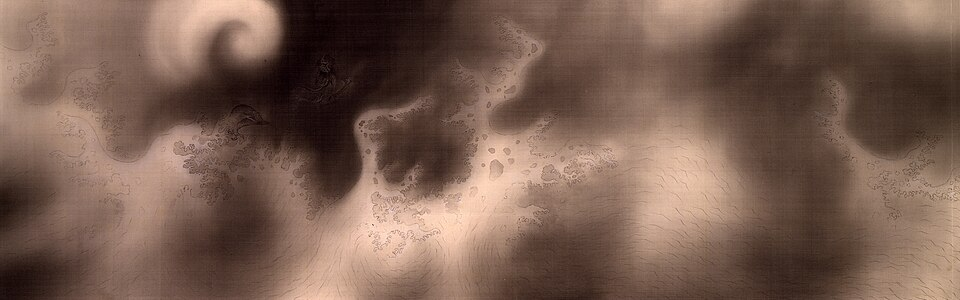
画像を拡大 ＋《生々流転（部分）》
- 作者
- 横山大観
- 制作時期
- 1923年
- 所在地・所蔵
- 東京国立近代美術館
- 素材・形式
- 墨画・絹本・画巻
- 原題
- 生々流転
- 別名
- Metempsychosis
出典・画像について
画像出典：Yokoyama Taikan
Public domain
作品情報：画像出典・作品情報（Commons） · 所蔵館の作品ページ
制作メモ
東京国立近代美術館の原品と確認。
選定画像は巻全体ではなく部分であり、キャプションにも部分と明示する。
公式DBで材質・寸法を補った。
原資料の図版とは異なる部分を掲載。
朦朧体が試みた空気と光
書籍 p.251朦朧体は日本美術院の大観・春草らのぼかしの技法を呼ぶ語である。明治後期、洋画の外光派が隆盛するのと同時期に、日本画でも空気と光を描く試みが行われた。1898年（明治31）に東京美術学校を辞した天心が中心となって日本美術院を結成し、日本画の近代化を追求した。大観・春草はその指導の下、西洋画の技法も用いて研究した。
日本絵画に不可欠とされていた輪郭線を廃し、湿った画面に何もつけない空刷毛でぼかしを作り、空気や光と空間を表そうとした。大観らは墨の濃淡で空気・光線を描こうとしたが、線の曖昧さを非難された。絵は描くものか、塗るものかという問題が横たわっていたといえる。
朦朧体の名は、ヨーロッパの印象主義やフォーヴィスムと同じく、発表時に蔑称として付けられた。しかし改良を重ね、時が経つにつれ革新性と影響力が認められた。
建築・彫刻・陶芸と後の展開
建築と彫刻の近代化
書籍 p.251建築ではお雇いのコンドルらが鹿鳴館・上野博物館を建築し、工部大学校で日本人を育てた。明治後期には辰野金吾・片山東熊らが主要建築を担い、片山の《旧赤坂離宮》（1909年、現迎賓館）がその作例となる。

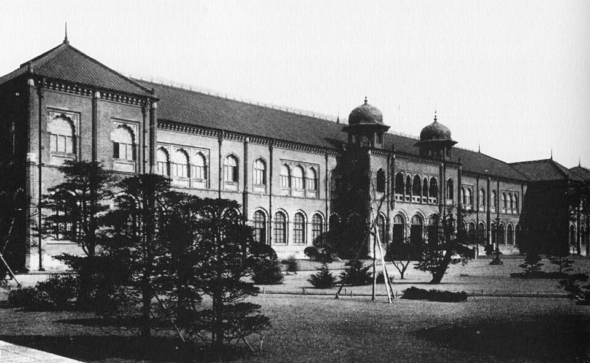
画像を拡大 ＋《上野博物館旧本館》
- 作者
- ジョサイア・コンドル（設計）
- 制作時期
- 1882年開館
- 所在地・所蔵
- 東京・上野（旧建築、現存せず）
- 素材・形式
- 建築（当時写真）
- 別名
- 東京帝室博物館旧本館
出典・画像について
画像出典：Dallas Finn, Meiji Revisited / Wikimedia Commons
Public domain
作品情報：画像出典・作品情報（Commons）
制作メモ
コンドル設計の旧本館を写した1900年以前の写真。
現本館や復元物ではない。
画像出典は国会図書館、写真自体のPD表示も確認できる。

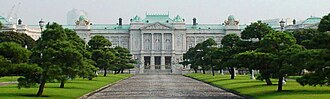
画像を拡大 ＋《旧東宮御所（迎賓館赤坂離宮）》
- 作者
- 片山東熊（総指揮）
- 制作時期
- 1909年
- 所在地・所蔵
- 東京都港区元赤坂二丁目1番1号
- 素材・形式
- 鉄骨補強煉瓦造建築
- 原題
- 東宮御所
- 別名
- 赤坂離宮／迎賓館赤坂離宮
出典・画像について
作品情報：画像出典・作品情報（Commons） · 所蔵館の作品ページ
制作メモ
原建築と現状写真を区別するため公式資料を追加確認。
1909年竣工建築を2005年に撮影した写真で、1974年の迎賓館改修後。
現在の本館正面として使用できる。
原画像の配信制限または小さい元画像のため330px配信画像を使用。
明治末期、パリでロダン作品に触れた荻原守衛と高村光太郎は、日本の彫刻に近代化をもたらした。それまで希薄であった人間の内面性を表すため、ブロンズの制作に取り組んだ。荻原の《女》（1910年）が原資料の作例である。

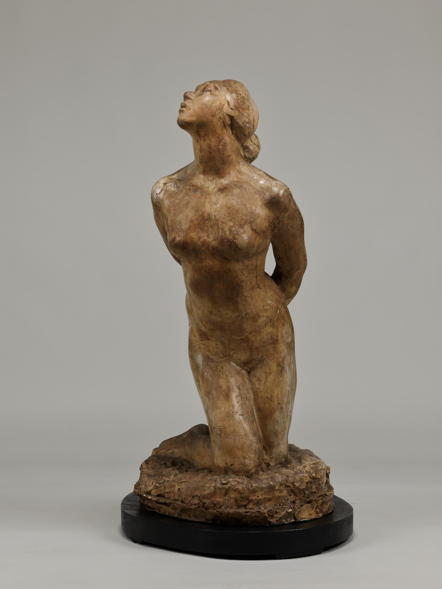
画像を拡大 ＋《女》
- 作者
- 荻原守衛
- 制作時期
- 1910年
- 所在地・所蔵
- 東京国立博物館（C-1593）
- 素材・形式
- 石膏造
- 原題
- 女
- 別名
- Woman
出典・画像について
画像出典：「女」 東京国立博物館所蔵（C-1593） / ColBase
ColBase利用規約（出典明記）
作品情報：画像出典・利用条件 · 作品照合資料 · 所蔵館の作品ページ
制作メモ
東京国立博物館所蔵の石膏原型。
原資料の図は横からの撮影で、掲載画像は別の角度から撮影している。
輸出陶磁器から後の陶芸へ
書籍 p.251明治中期までは政府の方針に従い、輸出用の陶磁器生産へ力が注がれた。欧米の流行が去って輸出が減ると、装飾陶磁器を見直す気運が高まった。
装飾陶磁器を見直す姿勢を受けた後の展開として、大正から昭和には古陶磁研究を手本とする創作陶芸と、日常の器に美を見いだす民芸運動が登場する。後者は河井寛次郎・濱田庄司ら陶芸家に加え、芹沢銈介の染織、棟方志功の版画など分野を超える運動となった。河井の《鉛釉白流蓋付壺》（1930年）を参考作品として掲げる。
正式名は鉛釉白流蓋付壺。公式作品ページ本文取得に失敗し、原資料の多面形の個体と写真利用条件を確認できないため画像を保留する。
《鉛釉白流蓋付壺》
- 作者
- 河井寬次郎
- 制作時期
- 1930年
- 所在地・所蔵
- 日本民藝館（同名作品の所蔵を確認、掲載個体照合は保留）
- 素材・形式
- 陶器
- 原題
- 鉛釉白流蓋付壺
出典・画像について
第二次世界大戦後には作風が一層広がり、八木一夫の《ザムザ氏の散歩》（1954年）に代表される、オブジェ焼きと呼ばれる立体造形も現れた。これも明治以降の陶芸の展開を示す参考作品である。
同名作品が複数あり原資料の円環状個体を確定できない。公式画像は無断使用禁止を明示し、作品・撮影画像いずれも自由利用条件を確認できず保留。
《ザムザ氏の散歩》
- 作者
- 八木一夫
- 制作時期
- 1954年
- 所在地・所蔵
- 京都国立近代美術館（同名作品の所蔵を確認、掲載個体照合は保留）
- 素材・形式
- 陶器
- 原題
- ザムザ氏の散歩
- 別名
- Mr. Samsa's Walk
出典・画像について
要点まとめ
- 江戸末の洋学研究、出島での学習、ワーグマンの指導が明治洋画の前史となった。
- 由一らは画塾を開き、工部美術学校ではイタリア人の指導者が西洋美術を教えた。
- フェノロサと天心は日本画の革新を推進し、東京美術学校と日本美術院へつながった。
- 明治美術会の写実・暗い色調に対し、白馬会は自然光の下の明るい表現を目指した。
- 青木繁は海の幸などを描き、明治浪漫主義の立役者となった。
- 建築ではお雇い外国人が日本人を育て、彫刻ではロダンに学んだ人々が内面表現を追求した。
- 万博と内国勧業博覧会は制作と鑑賞を促し、1907年の文展は国家の美術制度を形作った。
- 朦朧体は輪郭線とぼかしによる空気・光の表現を試み、後に革新性が認められた。
確認問題
選択問題：0／3問回答・正解0
A. 一問一答
問11876年に設けられ、フォンタネージらが指導した学校は何か。
答えを見る
問2黒田清輝らが自然光の下で明るく描く考えに共感して結成した団体は何か。
答えを見る
問31907年に始まった文部省美術展覧会の略称は何か。
答えを見る
B. 4択
問4東京美術学校の設立と開校の組合せはどれか。
→ 本文で確認（美術団体と学校の対応を整理する）
問5朦朧体の説明として本文に合うものはどれか。
→ 本文で確認（朦朧体が試みた空気と光）
問6日本政府が公式参加した1873年の万博はどこで開催されたか。
→ 本文で確認（万博と内国勧業博覧会）
C. 図版問題
問7吊るされた鮭を描いたこの作品の作者は誰か。
答えを見る
問8魚を持ち歩く人物群を描いた、この作品の作者は誰か。